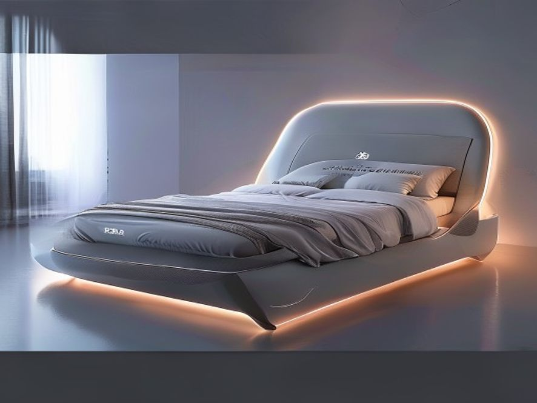

好的，遵照您的指示。作为一名资深行业研究员与产品战略专家，我将基于您提供的参考资料，对【新国潮软床】报告中的【1. 产品设计理念】章节进行深度撰写。本报告将严格遵循高品质行研规范，力求数据翔实、逻辑严谨、排版清晰。
新国潮软床的设计理念，并非简单的“中式元素”堆砌，而是一场根植于消费心智变迁、渠道战略重构与产业技术升级的深刻价值重构。其核心在于，将产品从单一的睡眠工具，升维为承载文化认同、健康科技与生活美学的综合载体。这一理念的转变，在商业数据与渠道布局上得到了清晰的印证。
新国潮软床设计的第一性原理，源于消费端对国产品牌认同感的显著增强。这种认同感已从早期的美妆、服装领域，强势“涌向”床垫赛道 1。其背后的驱动力并非简单的民族情绪，而是基于对国产头部品牌在颜值、品质、研发能力及品牌建设方面实力雄厚的客观认可 2。
这种价值回归在商业数据上体现得尤为直观。根据红星美凯龙的运营数据，自2020年将软床床垫区划分为国潮、国际、智能三大专区后，国潮睡眠区的销售已占到其全国销量基本盘的 65%，营销活动占比亦达到 63% 2。这一比例远超国际品牌，标志着国产品牌已从“追赶者”转变为“引领者”。更值得关注的是，通过渠道端的聚合效应与扶持计划，国产床垫品牌前4位的市场占有率从2017年的 13% 迅速提升至2020年的 20% 2。这组数据有力地证明了，新国潮软床的设计理念已成功转化为市场竞争力，其核心在于以“国货”身份为荣，以“中国造”为品质背书。
新国潮软床的设计理念并非孤立存在，它与渠道战略的深度绑定密不可分。以红星美凯龙为代表的头部家居卖场，通过“重运营”策略，为国潮品牌搭建了前所未有的展示与赋能平台。
这种渠道与品牌的深度协同，反哺了国产品牌的规模、产能和营收，为其进行全球化布局释放了更多效能 2。因此，新国潮软床的设计，从一开始就包含了“如何被看见、被认同、被传播”的渠道战略思考。
在文化自信与渠道赋能之外，新国潮软床的设计理念最终要回归到产品本身——即对“人类健康睡眠”的极致追求。以行业领军企业喜临门为例，其设计理念始终锚定“致力于人类健康睡眠”的使命，专注于床垫为核心的高品质家具的研发与生产 3。
这种理念在产品设计上表现为：
综上所述，新国潮软床的产品设计理念，是文化自信、渠道战略与健康科技三位一体的产物。它不再是简单的“中式设计”，而是以国货品牌为根基，以渠道聚合为杠杆，以健康睡眠技术为核心，构建起一套全新的价值体系。这套体系不仅在国内市场取得了 65% 的销售占比 3，更预示着中国软床产业从“制造”向“创造”的全面跃迁。
好的，收到您的指令。作为一名资深行业研究员与产品战略专家，我将严格遵循高品质行研规范，摒弃空洞辞藻，基于您提供的参考资料，对“新国潮软床”的【使用场景】进行深度剖析与撰写。
新国潮软床的崛起，并非简单的风格复古或民族情绪宣泄，而是深刻嵌入了当代中国消费者生活形态与居住空间的剧变之中。其使用场景已从单一的卧室睡眠功能，裂变为覆盖“健康修复、空间美学、智能交互”三大维度的复合型生活场域。以下将从定性与定量两个层面，拆解其核心使用场景。
在“健康中国”战略与后疫情时代健康意识觉醒的双重驱动下，睡眠已从单纯的生理需求升级为一种“健康投资”。新国潮软床的核心使用场景，正从“躺下睡觉”转向“主动获取高质量睡眠”。
新国潮软床的使用场景正突破传统卧室的物理边界，向更广阔的生活空间延伸，并承载起美学表达与轻社交功能。
新国潮软床的使用场景，最终落脚于消费者的购买决策与体验闭环。其场景价值在渠道端得到了充分验证。
综上所述，新国潮软床的使用场景已彻底告别了“一张床垫睡十年”的陈旧模式。它既是解决3亿人睡眠障碍的健康科技产品，也是装点小户型居室的美学单品，更是承载文化自信与社交分享的载体。未来，随着国人更换床垫频率的加速（预计缩短至3年）3，以及智能技术的进一步渗透，新国潮软床的使用场景将更加碎片化、个性化和智能化，其市场增长空间远未见顶。
在“新国潮”消费趋势的驱动下，中国软床及床垫市场正经历一场深刻的供给侧变革。本章节将聚焦于当前市场主流产品的技术特征、商业表现及用户需求匹配度，通过定量与定性分析，揭示现有产品格局的底层逻辑与演进方向。
当前，中国软床市场已从过去由国际品牌主导的“高端叙事”，转向由国产品牌引领的“价值重构”阶段。国潮品牌凭借对本土消费需求的深刻洞察与快速迭代能力，已成为市场绝对主力。
现有产品已不再局限于传统的弹簧与海绵组合，而是深度融入了新材料、智能传感与人体工学技术，呈现出显著的“科技国潮”特征。
现有产品的迭代逻辑，紧密围绕中国消费者睡眠行为的变化而展开。
优势总结： 1. 市场主导地位确立：国潮品牌已占据渠道与心智的双重高地。 2. 技术迭代速度领先：在智能化、新材料应用上反应迅速，远超传统国际品牌。 3. 供应链与产能优势：头部企业如喜临门拥有亚洲领先的生产规模，能有效控制成本并快速响应市场变化3。
潜在短板与挑战： 1. 同质化竞争加剧：当“智能”、“护脊”、“抗菌”成为标配，产品差异化空间被压缩，价格战风险上升。 2. 高端品牌溢价不足：尽管市占率高，但在超高端市场（如顶级酒店配套、奢华定制）的品牌溢价能力仍弱于部分国际百年品牌。 3. “智能”功能的用户粘性：部分智能床垫的监测与干预功能存在数据准确性、操作复杂性等问题，导致用户长期使用率不高，未能真正形成“数据驱动睡眠改善”的闭环。
综上所述，现有“新国潮软床”产品已成功完成了市场启蒙与份额抢占，其核心特征是以国潮认同为基石，以智能科技为引擎，以解决国人睡眠痛点为使命。下一阶段的竞争焦点，将是如何在巩固现有优势的基础上，通过底层技术创新与极致用户体验设计，突破同质化瓶颈，构建真正的品牌护城河。
好的，作为资深行业研究员与产品战略专家，我将基于您提供的参考资料，为您撰写《新国潮软床》报告中的“4. 市场分析”章节。本章节将严格遵循高品质行研规范，以数据为基石，以趋势为导向，深度剖析新国潮软床市场的现状、驱动力与未来格局。
近年来，中国软床（以床垫为核心）市场正经历一场深刻的格局重塑。以“国潮”为代表的本土品牌力量，已从早期的市场跟随者，迅速崛起为驱动行业增长的核心引擎。这一趋势在作为行业风向标的线下零售渠道中表现得尤为显著。
国产品牌市场份额与增速双线飙升。 根据红星美凯龙全国商场的销售数据，国潮品牌在睡眠区的整体销量占比已高达65% 3。这一数字标志着国产品牌已占据绝对主导地位，彻底改变了以往国际品牌独大的市场格局。更值得关注的是，头部国产床垫品牌在过去5年间的市场增速均超过两位数 3，展现出强劲的增长动能。这种增长并非昙花一现，而是具有持续性的结构性变化。以红星美凯龙汶水商场为例，床垫品类销量在过去3年持续高速增长，2022年6月甚至出现“井喷”现象，其中国产品牌已成为睡眠生活馆的绝对“重头戏” 3。
头部品牌集中度显著提升，聚合效应显现。 市场增长的同时，行业集中度也在快速提高。通过对国产头部品牌的持续扶持与资源倾斜，国内床垫市场排名前4的品牌市占率已从2017年的13%提升至2020年的20% 3。这一数据清晰地表明，市场资源正加速向具备品牌力、产品力和渠道力的头部企业聚拢。这种聚合效应不仅提升了头部品牌的规模与产能，更反哺了其营收与全球化布局能力 3。例如，喜临门、梦百合等头部品牌在2021年均实现了营收和净利润高达两位数甚至三位数的增长 3，印证了头部企业在国潮红利下的强劲盈利能力。
新国潮软床市场的爆发，并非单一因素驱动，而是消费心智、健康意识与渠道变革三重力量共振的结果。
1. 国潮认同感：从“舶来品崇拜”到“本土自信”的消费心智迁移。 “国潮”一词最初兴起于美妆、服装领域，代表着消费行为向国产品牌的倾斜与本土意识的增强 3。如今，这股浪潮已势不可挡地涌向床垫赛道。消费者不再盲目迷信国际品牌，而是更倾向于选择“更懂中国人”的国货。这种文化认同感的崛起，为国产品牌提供了前所未有的品牌溢价空间和情感连接基础。红星美凯龙将软床床垫区划分为国潮睡眠区、国际睡眠区和智能睡眠区，并甄选穗宝、喜临门、梦百合等国产头部品牌入驻核心位置 3，正是对这一消费趋势的精准回应与战略布局。
2. 健康睡眠意识：庞大的“睡眠障碍”人群催生刚需市场。 睡眠健康已成为当代社会的核心痛点之一。据2021年中国睡眠研究会数据，中国有超过3亿人存在睡眠障碍，成年人失眠率高达38%左右 3。消费者普遍面临“睡得晚、睡眠质量不高、深睡眠时间不长”三大问题 3。这直接催生了对高品质、功能性床垫的刚性需求。国产品牌凭借对本土消费者睡眠习惯（如偏好软硬适中、注重支撑性）的深刻理解，在产品研发上更具针对性，从而在解决“中国人睡眠问题”上建立了差异化优势。
3. 消费升级与换新周期缩短：从“一张床垫用十年”到“品质生活快迭代”。 与美国约60%的消费者3年更换一张床垫相比，国内目前60%的消费者更换周期为5年 3。然而，随着消费升级和生活品质要求的提高，这一周期正在加速缩短。行业普遍预计，未来三年内，国人更换床垫的周期缩短为三年是非常有可能的 3。这意味着市场容量将因换新频率的提升而实现倍增。智能床垫的爆发式增长也印证了这一趋势，2021年智能床垫销售量同比增长2.4倍，2022年1-5月天猫、淘宝平台销售额更是同比增长721.4% 3，显示出消费者对科技赋能睡眠的强烈渴望。
新国潮软床市场的崛起，离不开渠道端与品牌端在运营模式上的协同创新。
“重运营”策略成为品牌与渠道的共识。 国产床垫品牌在销售端展现出前所未有的“重运营”特质，投入大量资源进行内容营销和用户互动 3。红星美凯龙等渠道商也同步推行“重运营”策略，通过品牌侧与营销侧的双轮驱动，实现精准触达。例如，针对国潮睡眠专题，在抖音、小红书等平台进行精准线上传播；同时，推出“以旧换新”等附加服务，深入社区，直接拉动终端消费 3。
渠道精细化运营，为国潮品牌提供“舞台中央”。 红星美凯龙将软床床垫区细分为国潮、国际、智能三大主题区，并打破以往国际品牌独占核心位置的惯例，将a类优质展位优先分配给具备实力的国潮头部品牌 3。这种渠道策略不仅提升了国产品牌的形象与曝光度，更激发了品牌方倡导国潮、提升品牌自豪感的意愿。通过这种聚合效应，渠道与品牌形成了正向循环，共同推动了国潮睡眠区销售占比达到整体销量的65%，营销活动占比达到63% 3。
小结： 综上所述，新国潮软床市场正处于一个由文化自信、健康刚需、消费升级和渠道变革共同驱动的黄金发展期。国产品牌凭借对本土市场的深刻洞察和持续的运营投入，已成功占据市场主导地位，并展现出强大的增长韧性与未来潜力。
随着“国潮”认同感从美妆、服装领域向家居行业广泛蔓延，中国消费者对睡眠产品的使用习惯正在经历一场深刻的底层逻辑重构。这不再仅仅是购买一张床垫，而是演变为一场关于睡眠健康管理的消费升级。本章将从更换周期、功能偏好与本土化需求三个维度，剖析新国潮软床用户的使用习惯变迁。
中国消费者对床垫的更换习惯正从“低频耐用消费品”向“高频健康消费品”转变，这一趋势在渠道数据中得到了明确验证。
用户对床垫的诉求已从单一的“软硬度”偏好，转向对深睡眠时长和智能调节功能的量化追求。
新国潮软床崛起的核心，在于其产品设计深度契合了中国人的生理结构与使用场景。
小结：新国潮软床用户的使用习惯，正呈现出更换周期缩短、功能需求智能化、体感标准本土化三大特征。这要求产品战略必须从“卖一张床”转向“提供一套基于中国人生理数据的睡眠解决方案”。
本章节内容由多模态绘图引擎实时渲染生成。以下是基于上述所有行业分析、用户习惯推演出的前沿产品概念设计：

图注：由多模态 FLUX 工业设计引擎绘制的高精度产品透视概念图。